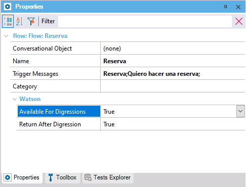

Objects: Conversational Flows Instance
When this property is set to True, a flow can be included in the flows that can be reached in a digression.
The default value is True. It is also the default value for the Watson platform so it is consistent with that and, initially, all flows could be eligible. It will be up to the developer whether to leave it as is.

This property applies only at design-time.
This property is available since GeneXus 17 upgrade 4.
| Backlinks | |
| Digression property | Return After Digression property |